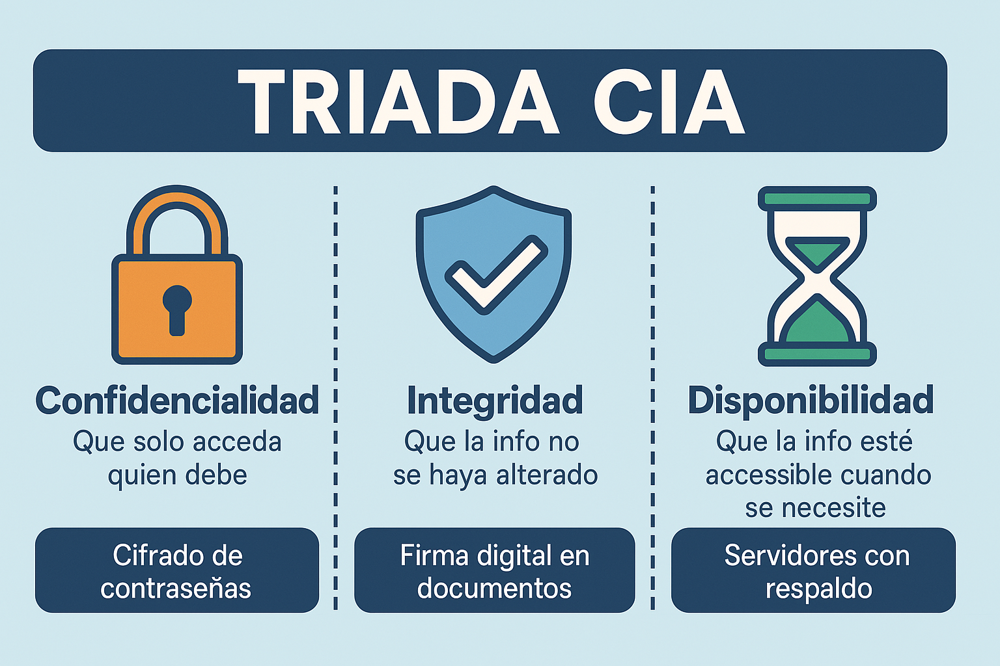
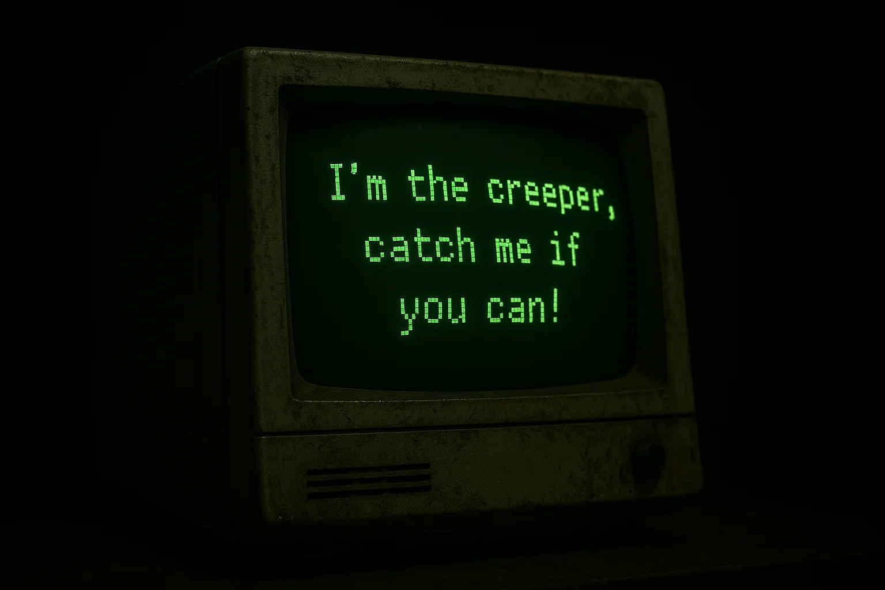
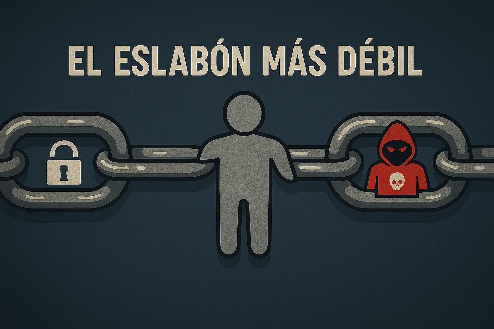

🛡️ Tema 01 - Introducción a la Seguridad de los Sistemas Informáticos y de Comunicación📌 ¿De qué va este curso?🎯 Objetivos del curso🧩 ¿Por qué es tan importante la seguridad informática?🏢 ¿Y esto en una empresa, cómo se aplica?🧠 Conceptos clave para tener en mente💣 Ejemplos de ciberataques reales🧑🏫 Actividad: CSI Ciberseguridad🧮 ¿Cómo medimos si algo es seguro?👩🏫 Debate rápido en clase🎲 Mini actividad🤓 Curiosidad geek📎 Conclusión
Vamos a sumergirnos en el apasionante (y a veces caótico) mundo de la seguridad informática y de la comunicación. Es decir, cómo proteger nuestros sistemas, redes, dispositivos y datos frente a amenazas que están ahí fuera… esperando un descuido para colarse.
Vivimos en un mundo cada vez más digital: pagos online, redes sociales, servicios en la nube, trabajo remoto, IoT (el Internet de las Cosas)… ¿Y todo eso es seguro? Pues depende. De ti, de mí, de cómo se configure y se proteja cada parte.
Durante estas 150 horas vamos a:
Comprender qué es la seguridad informática y por qué es tan crucial hoy en día.
Identificar vulnerabilidades, amenazas y riesgos comunes en sistemas y redes.
Conocer herramientas, técnicas y procedimientos para proteger la información.
Aprender a aplicar políticas de seguridad, tanto técnicas como organizativas.
Saber cómo actuar ante incidentes de seguridad (¡spoiler: el pánico no ayuda!).
Familiarizarnos con aspectos legales y normativas relacionadas.
Porque los ciberdelincuentes no descansan.
Porque la información vale oro (y se vende como tal).
Porque incluso sin mala intención, un descuido puede costar mucho dinero, reputación o incluso vidas.
Porque todo está conectado, y el eslabón más débil puede romper la cadena.
En una empresa, la seguridad informática no es opcional: es una necesidad estratégica.
Protección de datos sensibles: clientes, empleados, contratos, proyectos…
Cumplimiento legal: protección de datos (como el RGPD), leyes laborales, etc.
Evitar pérdidas económicas: un simple ataque de ransomware puede paralizar toda la actividad.
Imagen y reputación: una filtración puede destruir la confianza de los clientes.
Continuidad del negocio: planes de recuperación ante desastres, copias de seguridad, redundancias…
🔎 Un error humano (como hacer clic en un enlace malicioso) puede costar millones a una empresa. Por eso la formación del personal en ciberseguridad es clave.
La seguridad informática es una inversión, no un gasto.
Antes de adentrarnos en técnicas, herramientas y amenazas, vamos a familiarizarnos con algunos conceptos que van a salir una y otra vez durante el curso. Son como los “cimientos” de la seguridad informática.
Entenderlos bien desde el principio nos va a ayudar a no perdernos cuando entremos en temas más técnicos o específicos del mundo laboral.
🔐 Seguridad de la información: Protege los activos de información contra accesos no autorizados, alteraciones o destrucción.
🔒 Seguridad informática: Enfocada en proteger sistemas computacionales: hardware, software, redes, servidores, etc.
🌐 Seguridad en las comunicaciones: Asegura que los datos que se transmiten por redes (internet, intranets, VPNs…) no sean interceptados ni modificados.
Aquí van algunos casos que demuestran que los ciberataques no son ciencia ficción, sino una amenaza diaria para empresas de todo tipo:
WannaCry (2017): Un ransomware que cifró archivos en más de 200.000 equipos en 150 países. Afectó especialmente a hospitales del Reino Unido, paralizando operaciones médicas y servicios urgentes.
Sony Pictures (2014): Los atacantes robaron correos internos, guiones y películas sin estrenar. Se filtraron conversaciones comprometidas entre ejecutivos. Todo por una película satírica sobre Corea del Norte.
Equifax (2017): Robo de datos personales de 147 millones de personas, incluyendo números de la seguridad social y fechas de nacimiento. Se filtraron por no parchear una vulnerabilidad conocida. Multa: 700 millones de dólares.
Colonial Pipeline (2021): Ciberataque a la red de oleoductos más grande de EE. UU. obligó a cerrar el suministro de combustible. Pánico en las gasolineras y pago de 4,4 millones en bitcoins para recuperar el sistema.
MediaMarkt (2021): Un ransomware afectó a más de 3.000 servidores. Las tiendas no podían operar con normalidad durante días. Un caos a nivel europeo justo en fechas de alto consumo.
Air Europa (2023): Se filtraron datos bancarios de clientes tras un ataque a su sistema de pagos. La empresa tuvo que contactar urgentemente con los afectados para que cancelaran sus tarjetas.
LinkedIn (2021 y 2023): Más de 500 millones de perfiles públicos fueron recolectados mediante scraping. La información fue usada en campañas de phishing personalizadas dirigidas a empleados de empresas.
23andMe (2023): Robo de datos genéticos de usuarios. El ataque puso en riesgo información extremadamente personal como ascendencia y predisposición a enfermedades. Un aviso de lo sensibles que pueden ser ciertos datos en la nube.
Divide la clase en grupos y reparte un caso de los anteriores a cada uno. Deben investigar y presentar:
¿Qué vulnerabilidad o error permitió el ataque?
¿Qué impacto tuvo para la empresa o los usuarios?
¿Qué medidas de seguridad habrían podido evitarlo?
¿Qué aprendemos de este caso para aplicar en un entorno laboral?
10-15 minutos por grupo y hacer una mini presentación de 3 minutos por equipo.
En el mundo de la ciberseguridad, no todo se trata de apagar fuegos o evitar virus. También hay que tener claro qué significa realmente que un sistema o una información sea “segura”.
Para eso, usamos un modelo fundamental llamado la Triada CIA (no, no tiene nada que ver con espías 😅), que define tres pilares básicos sobre los que se construye cualquier sistema seguro:
C de Confidencialidad (Confidenciality).
I de Integridad (Integrity).
A de Disponibilidad (Availability).
Important
Si falla uno de estos pilares, la seguridad está comprometida.

| Pilar | ¿Qué garantiza? | Ejemplo práctico |
|---|---|---|
| 🔒Confidencialidad | Solo accede quien debe | Cifrado de contraseñas |
| 🛡️Integridad | La información no se ha alterado | Firma digital en documentos |
| ⌛Disponibilidad | Que la información está accesible cuando se necesita | Servidores con respaldo y alta disponibilidad |
¿Has sufrido alguna vez un ataque informático o pérdida de datos?
¿Crees que las redes sociales cuidan bien tu privacidad?
¿Qué riesgos ves en el uso de la nube (Google Drive, iCloud, etc.)?
Haz una lista de 5 cosas personales que tengas digitalizadas (fotos, datos bancarios, correos...). Luego responde:
¿Dónde están almacenadas?
¿Qué medidas de seguridad usas? (contraseñas, copias de seguridad, etc.)
¿Qué pasaría si alguien accediera a ellas?
Note
El primer “virus informático” de la historia fue Creeper, creado en 1971. Solo mostraba el mensaje:
“I’m the creeper, catch me if you can!”
No era malicioso, pero su aparición dio lugar al desarrollo del primer antivirus: Reaper.

La seguridad informática ya no es solo cosa de técnicos o frikis de los ordenadores. Nos afecta a todos, y mucho más en el entorno laboral. Cada vez que enviamos un correo, usamos un programa en la empresa o trabajamos con datos de clientes, estamos siendo parte (consciente o no) del sistema de seguridad de nuestra organización.
Y aquí va lo importante: la mayoría de los ataques no se producen por culpa de un fallo técnico, sino humano. Un clic mal dado, una contraseña poco segura o una configuración que nadie revisó pueden bastar para que un ataque tenga éxito.

Este primer tema nos deja claro que:
La seguridad perfecta no existe, pero sí se puede mejorar muchísimo.
Todos, desde el recepcionista hasta el director, jugamos un papel clave.
La formación y la concienciación son tan importantes como tener buen software.
Este curso no va solo de ordenadores, va de personas. De cómo pensamos, actuamos y decidimos. Y por eso, entender los conceptos básicos desde ya es fundamental.